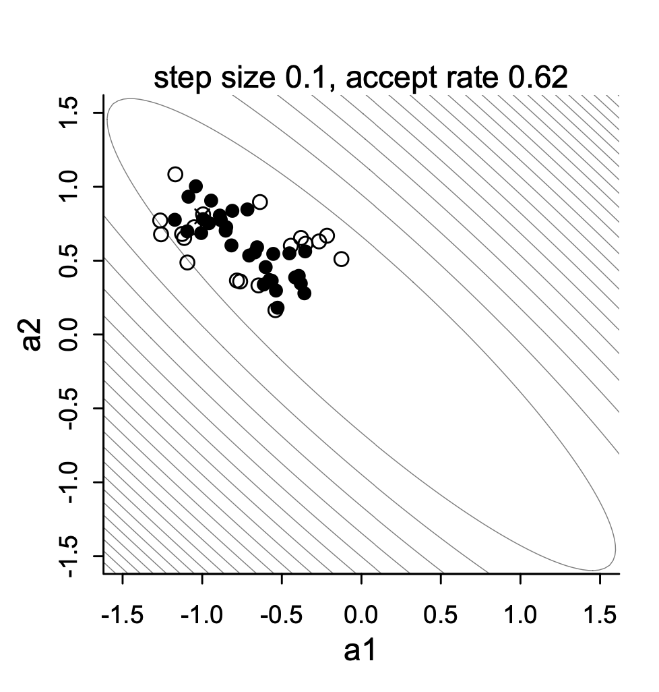
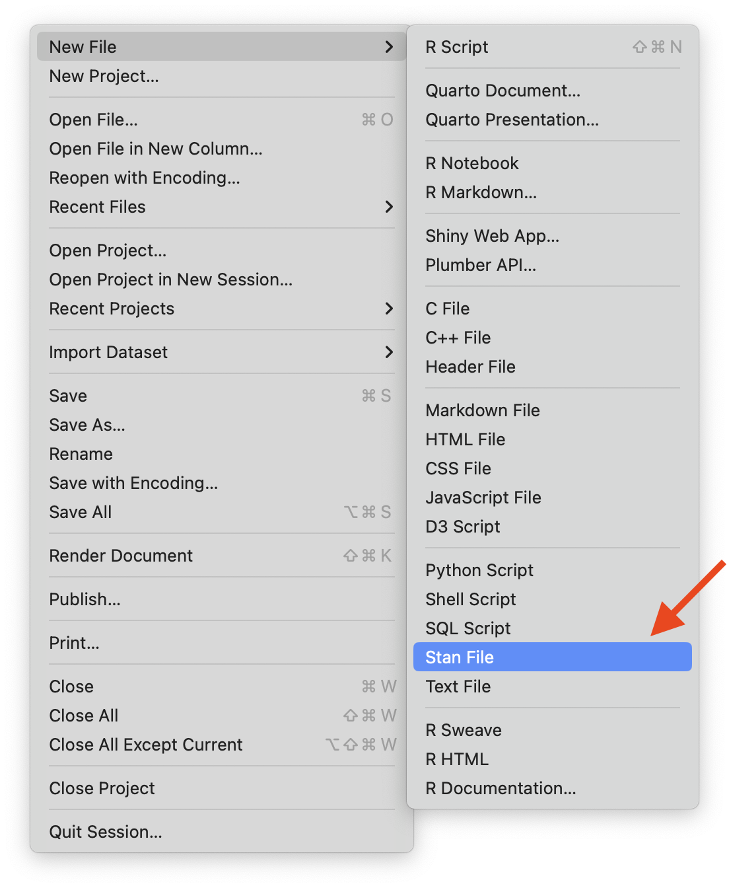

Today’s Lecture Objectives
An Introduction to MCMC
An Introduction to Stan
Example: Linear Regression
but, before we begin…
Go through qmd file Lecture03.qmd ;
Download R file DietDataExample.R and data file DietData.csv
Quiz:
What is a conjugate prior?
Why we want to use conjugate priors?
In previous class…
We work with a simplest Bayesian model: roll “1” from a 6-size dice
We talked about the selection of prior distributions from uninformative to informative priors
We talked about binomial distribution as the likelihood function
The posterior distribution is directly derived by update \alpha and \beta
Markov Chain Monte Carlo Estimation
Today, we dive deeper into the estimation process.
Bayesian analysis is all about estimating the posterior distribution .
Up until now, we’ve worked with the posterior distribution that are well-known
Beta-Binomial conjugate pairs had a Beta posterior distribution
In general, likelihood distributions from the exponential family have conjugate priors
Conjugate prior: the family of the prior is equivalent to the family of posterior.
Why not keep using conjugate priors for all scenarios?
Oftentimes, however, posterior distributions are not easily obtainable
No longer able to use properties of the distribution to estimate parameters
It is possible to use an optimization algorithm (e..g., Newton-Raphson or Expectation-Maximization) to find maximum value of posterior distribution
But, such algorithms may be very time consuming for high-dimensional problems
Instead: “sketch” the posterior by sampling from it - then use that sketch to make inference
Sampling is done via MCMC
MCMC algorithm
MCMC algorithm interactively draws samples from the posterior distribution
For fairly simplistic models, each iteration has independent samples
Most models have some layers of dependency included
which can slow down the sample process from the posterior distribution
One problem of slowness of MCMC is high-dimensional problems
This plot shows one variant of MCMC - Metropolis sampling draws for two highly correlated parameters

Metropolis chains under high correlations
Variations of MCMC algorithms
Most of these specific algorithms use one of two types sampling:
Direct sampling from the posterior distribution (i.e., Gibbs sampling )
Often used when conjugate priors are specified
Popular software: BUGS, JAGS, Mplus
Indirect (rejection-based) sampling from the posterior distribution (e.g, Metropolis-Hastings, Hamiltonian Monte Carlo)
Making MCMC Algorithms
Efficiency is the main reason for many algorithms
Efficiency in this context: How quickly the algorithm converges and provides adequate coverage (“sketching”) of the posterior distribution
No one algorithm is uniformly most efficient for all models (here model = likelihood \times prior)
The good news is that many software packages (stan, JAGS, Mplus, especially) don’t make you choose which specific algorithm to use
The bad news is that sometimes your model may take a large amount of time to reach convergence (think days or weaks)
Alternatively, you can code your own custom algorithm to make things run smoother (different priors/ sampling strategies)
Commonalities Across MCMC Algorithms
Despite having fairly broad differences regarding how algorithms sample from the posterior distribution, there are quite a few things that are similar across algorithms:
A period of the Markov chain where sampling is not directly from the posterior
The burnin period (sometimes coupled with other tuning periods and called warmup )
Methods used to assess convergence of the chain to the posterior distribution
Often involving the need to use multiple chains with independent and differing starting values
Summaries of the posterior distribution
Further, rejection-based sampling algorithms (e.g., Metropolis) often need a tuning period to make the sampling more efficient
The tuning period comes before the algorithm begins its burnin period
Example Data: Post-Diet Weights
Download example data UCLA website
Information about data:
In this example data file, it contains 30 subjects who used one of three diets: diet 1 (diet=1), diet 2 (diet=2), and a control group (diet=3).
The file DietData.csv contains the data we needed.
Variables in the data set are:
Respondent: Respondent ID 1-30
DietGroup: 1, 2, 3 representing the group to which a respondent was assigned
HeightIN: The respondents’ height in inches
WeightLB (Dependent Variable ): The respondents’ weight in pounds
Research Question : Are there differences in final weights between the three diet groups, and, if so, what the nature of the differences? Before we conduct the analysis, let’s look at the data
Visualizing Data: WeightLB variable
⌘+C
library (ggplot2) # R package for data visualization # read in data <- read.csv (here:: here ('posts' , '2024-01-12-syllabus-adv-multivariate-esrm-6553' , 'Lecture03' , 'Code' , 'DietData.csv' ))$ DietGroup <- factor (dat$ DietGroup, levels = 1 : 3 )head (dat)
Respondent DietGroup HeightIN WeightLB
1 1 1 56 140
2 2 1 60 155
3 3 1 64 143
4 4 1 68 161
5 5 1 72 139
6 6 1 54 159
⌘+C
# Histplot for WeightLB - Dependent Variable ggplot (dat) + geom_histogram (aes (x = WeightLB, y = ..density..), position = "identity" , binwidth = 20 , fill = 'grey' , col = 'grey' ) + geom_density (aes (x = WeightLB), alpha = .2 , size = 1.2 ) + theme_classic ()
Visualize Data: HeightIN Variable
⌘+C
# Histgram for HeightIN - Independent Variable ggplot (dat) + geom_histogram (aes (x = HeightIN, y = ..density..), position = "identity" , binwidth = 2 , fill = 'grey' , col = 'grey' ) + geom_density (aes (x = HeightIN), alpha = .2 , size = 1.2 ) + theme_classic ()
Visualize Data: WeightLB by DietGroup
⌘+C
# Histgram for WeightLB x Group ggplot (dat, aes (x = WeightLB, fill = DietGroup, col = DietGroup)) + geom_histogram (aes (y = ..density..), position = "identity" , binwidth = 20 , alpha = 0.3 ) + geom_density (alpha = .2 , size = 1.2 ) + theme_classic ()
Visualizing Data: WeightLB by HeightIN by DietGroup
⌘+C
# Histgram for WeightLB x HeightIN x Group ggplot (dat, aes (y = WeightLB, x = HeightIN, col = DietGroup, shape = DietGroup)) + geom_smooth (method = 'lm' , se = FALSE ) + geom_point () + theme_classic ()
Class Discussion: What do we do?
Now, your turn to answer (statistical) questions:
What type of analysis seems most appropriate for these data?
Is the dependent variable (WeightLB ) is appropriate as-is for such analysis or does it need transformed?
Are the independent variables (HeightIN, DietGroup ) is appropriate as-is for such analysis or does it need transformed?
Scientific Judgement…
Linear Model with Stan
⌘+C
# Linear Model with Least Squares ## Center independent variable - HeightIN for better interpretation $ HeightIN <- dat$ HeightIN - 60 ## an empty model suggested by data <- lm (WeightLB ~ 1 , data = dat)## Examine assumptions and leverage of fit ### Residual plot, Q-Q residuals, Scale-Location # plot(EmptyModel) ## Look at ANOVA table ### F-values, Sum/Mean of square of residuals # anova(EmptyModel) ## look at parameter summary summary (EmptyModel)
Call:
lm(formula = WeightLB ~ 1, data = dat)
Residuals:
Min 1Q Median 3Q Max
-62.00 -36.75 -24.00 49.00 98.00
Coefficients:
Estimate Std. Error t value Pr(>|t|)
(Intercept) 171.000 9.041 18.91 <2e-16 ***
---
Signif. codes: 0 '***' 0.001 '**' 0.01 '*' 0.05 '.' 0.1 ' ' 1
Residual standard error: 49.52 on 29 degrees of freedom
⌘+C
(Intercept)
1 1
2 1
3 1
4 1
5 1
6 1
7 1
8 1
9 1
10 1
11 1
12 1
13 1
14 1
15 1
16 1
17 1
18 1
19 1
20 1
21 1
22 1
23 1
24 1
25 1
26 1
27 1
28 1
29 1
30 1
attr(,"assign")
[1] 0
Path Diagram of the Full Model
flowchart LR
id1[(Empty Model)] ====> id2[(Full Model)]
Full model includes all effects (main effects, interaction effect):
What each arrow means? how to interpret them?
Can the three interaction term be included in the model? why?
graph LR;
HeightIN60 --> WeightLB;
DietGroup2 --> WeightLB;
DietGroup3 --> WeightLB;
HeightIN60xDietGroup2 --> WeightLB;
HeightIN60xDietGroup3 --> WeightLB;
HeightIN60xDietGroup2xDietGroup3 x-.-x WeightLB;
Steps in an MCMC Analysis
Model Building:
Model Estimation:
Model Evaluation:
Specified the Model
To begin, let’s start with an empty model and build up from there
Let’s examine the linear model we seek to estimate:
\text{WeightLB}_i = \beta_0 + e_i
Where: e_i \sim N(0, \sigma^2_{e})
Questions here:
Introduction to Stan
Stan is an MCMC estimation program
Most recent; has many convenient features
Actually does several methods of estimation (ML, Variational Bayes)
You create a model using Stan’s syntax
You then run the program to estimate your model
If you use R, the interface can be seamless
Stan and Rstudio

Create a new Stan file in Rstudio
Stan and R code blocks in qmd file
Stan Syntax
A Stan file saved as EmptyModel.stan
Each line ends with a semi colon ;
Comments are put in with //
Each block starts with block type and is surrounded by curly brackets {}
⌘+C
1 data { // 2 int <lower =0 > N; // 3 vector [N] y; // 4 parameters { // 5 real beta0; // 6 real <lower =0 > sigma; // 7 model { // 8 0 , 1000 ); // 9 0 , 100000 ); // 10 //
1
the data block include the observed information
2
sample size (declared as a integer value)
3
dependent variable (declared as vector with the length as sample size)
4
the parameter block includes all parameters we want to estimate
5
intercept parameter
6
standard deviation of residuals
7
the model block includes the prior information and likelihood
8
prior distribution for beta_0
9
prior distribution for SD of residuals
10
likelihood function for observed data
Stan Data and Parameter Declaration
⌘+C
< lower= 0 > N;
Like many compiled languages (e.g., Java, C++), Stan expects you to declare what types of data/parameters you are defining:
int: Integer values (no decimals)
real: Floating point numbers
vector: A one-dimensional set of real valued numbers
Sometimes, additional definitions are provided giving the range of the variable (or restricting the set of starting values):
For vector or matrix or array , we may need to add size to tell Stan how many elements it has.
Stan Data and Prior Distributions
⌘+C
~ normal (0 , 1000 );~ uniform (0 , 100000 );~ normal (beta0, sigma);
In the model block, we need to define the prior distribution for the model and the priors
If you have hyperparameters, you can consider them as same as parameters
⌘+C
1 < lower= 0 > betaSigma;2 < lower= 0 > sigmaMax;~ normal (0 , betaSigma);~ uniform (0 , sigmaMax);
1
You provide Stan with the SD of intercept
2
You provide Stan with the maximum of sigma
From Stan Syntax to Compilation
⌘+C
# compile model -- this method is for stand-alone stan files (uses cmdstanr) #setwd("~/Documents/Projects/quarto-academic-jihong/posts/2024-01-12-syllabus-adv-multivariate-esrm-6553/Lecture03") = cmdstan_model (stan_file = "Code/EmptyModel.stan" )# or this method using the string text in R <- " data { int<lower=0> N; vector[N] y; } parameters { real beta0; real<lower=0> sigma; } model { beta0 ~ normal(0, 1000); sigma ~ uniform(0, 100000); y ~ normal(beta0, sigma); } " 1 = cmdstan_model (stan_file = write_stan_file (stanModel))
1
stanModel is a character containing the entire Stan program
Once you have your syntax, next you need to have Stan translate it into C++ and compile an executable. The default argument compile = TRUE make a executable file EmptyModel for you.
CmdStanModel Object
⌘+C
1 names (model00.fromString)
1
model00.fromString is a R6 class object. All functions towards this object are stored inside itself.
[1] ".__enclos_env__" "functions" "expose_functions"
[4] "diagnose" "generate_quantities" "pathfinder"
[7] "variational" "laplace" "optimize"
[10] "sample_mpi" "sample" "format"
[13] "check_syntax" "variables" "compile"
[16] "clone" "save_hpp_file" "hpp_file"
[19] "cpp_options" "exe_file" "model_name"
[22] "has_stan_file" "stan_file" "print"
[25] "code" "include_paths" "initialize"
Some important functions include $sample() or $diagnose()
cmdstanr wants you to compile first, then run the Markov chainCheck here for more details of functions.
Building Data for Stan
⌘+C
# build R list containing data for Stan: Must be named what "data" are listed in analysis = list (1 N = nrow (dat),2 y = dat$ WeightLB
1
Sample size, nrow() calculates the number of rows of data
2
Vector of dependent variable
Stan needs the data you declared in you syntax to be able to run
Within R, we can pass this data list to Stan via a list object
The entries in the list should correspond to the data block of the Stan syntax
The R list object is the same for cmdstanr and rstan
Run Markov Chains in CmdStanr
⌘+C
# run MCMC chain (sample from posterior) = model00.fromFile$ sample (1 data = stanData,2 seed = 1 ,3 chains = 4 ,4 parallel_chains = 4 ,5 iter_warmup = 10000 ,iter_sampling = 10000
1
Data list
2
Random number seed
3
Number of chains (and parallel chains)
4
Number of warmup iterations (more details shirtly)
5
Number of sampling iterations
Running MCMC with 4 parallel chains...
Chain 1 Iteration: 1 / 20000 [ 0%] (Warmup)
Chain 1 Iteration: 100 / 20000 [ 0%] (Warmup)
Chain 1 Iteration: 200 / 20000 [ 1%] (Warmup)
Chain 1 Iteration: 300 / 20000 [ 1%] (Warmup)
Chain 1 Iteration: 400 / 20000 [ 2%] (Warmup)
Chain 1 Iteration: 500 / 20000 [ 2%] (Warmup)
Chain 1 Iteration: 600 / 20000 [ 3%] (Warmup)
Chain 1 Iteration: 700 / 20000 [ 3%] (Warmup)
Chain 1 Iteration: 800 / 20000 [ 4%] (Warmup)
Chain 1 Iteration: 900 / 20000 [ 4%] (Warmup)
Chain 1 Iteration: 1000 / 20000 [ 5%] (Warmup)
Chain 1 Iteration: 1100 / 20000 [ 5%] (Warmup)
Chain 1 Iteration: 1200 / 20000 [ 6%] (Warmup)
Chain 1 Iteration: 1300 / 20000 [ 6%] (Warmup)
Chain 1 Iteration: 1400 / 20000 [ 7%] (Warmup)
Chain 1 Iteration: 1500 / 20000 [ 7%] (Warmup)
Chain 1 Iteration: 1600 / 20000 [ 8%] (Warmup)
Chain 1 Iteration: 1700 / 20000 [ 8%] (Warmup)
Chain 1 Iteration: 1800 / 20000 [ 9%] (Warmup)
Chain 1 Iteration: 1900 / 20000 [ 9%] (Warmup)
Chain 1 Iteration: 2000 / 20000 [ 10%] (Warmup)
Chain 1 Iteration: 2100 / 20000 [ 10%] (Warmup)
Chain 1 Iteration: 2200 / 20000 [ 11%] (Warmup)
Chain 1 Iteration: 2300 / 20000 [ 11%] (Warmup)
Chain 1 Iteration: 2400 / 20000 [ 12%] (Warmup)
Chain 1 Iteration: 2500 / 20000 [ 12%] (Warmup)
Chain 1 Iteration: 2600 / 20000 [ 13%] (Warmup)
Chain 1 Iteration: 2700 / 20000 [ 13%] (Warmup)
Chain 1 Iteration: 2800 / 20000 [ 14%] (Warmup)
Chain 1 Iteration: 2900 / 20000 [ 14%] (Warmup)
Chain 1 Iteration: 3000 / 20000 [ 15%] (Warmup)
Chain 1 Iteration: 3100 / 20000 [ 15%] (Warmup)
Chain 1 Iteration: 3200 / 20000 [ 16%] (Warmup)
Chain 1 Iteration: 3300 / 20000 [ 16%] (Warmup)
Chain 1 Iteration: 3400 / 20000 [ 17%] (Warmup)
Chain 1 Iteration: 3500 / 20000 [ 17%] (Warmup)
Chain 1 Iteration: 3600 / 20000 [ 18%] (Warmup)
Chain 1 Iteration: 3700 / 20000 [ 18%] (Warmup)
Chain 1 Iteration: 3800 / 20000 [ 19%] (Warmup)
Chain 1 Iteration: 3900 / 20000 [ 19%] (Warmup)
Chain 1 Iteration: 4000 / 20000 [ 20%] (Warmup)
Chain 1 Iteration: 4100 / 20000 [ 20%] (Warmup)
Chain 1 Iteration: 4200 / 20000 [ 21%] (Warmup)
Chain 1 Iteration: 4300 / 20000 [ 21%] (Warmup)
Chain 1 Iteration: 4400 / 20000 [ 22%] (Warmup)
Chain 1 Iteration: 4500 / 20000 [ 22%] (Warmup)
Chain 1 Iteration: 4600 / 20000 [ 23%] (Warmup)
Chain 1 Iteration: 4700 / 20000 [ 23%] (Warmup)
Chain 1 Iteration: 4800 / 20000 [ 24%] (Warmup)
Chain 1 Iteration: 4900 / 20000 [ 24%] (Warmup)
Chain 1 Iteration: 5000 / 20000 [ 25%] (Warmup)
Chain 1 Iteration: 5100 / 20000 [ 25%] (Warmup)
Chain 1 Iteration: 5200 / 20000 [ 26%] (Warmup)
Chain 1 Iteration: 5300 / 20000 [ 26%] (Warmup)
Chain 1 Iteration: 5400 / 20000 [ 27%] (Warmup)
Chain 1 Iteration: 5500 / 20000 [ 27%] (Warmup)
Chain 1 Iteration: 5600 / 20000 [ 28%] (Warmup)
Chain 1 Iteration: 5700 / 20000 [ 28%] (Warmup)
Chain 1 Iteration: 5800 / 20000 [ 29%] (Warmup)
Chain 1 Iteration: 5900 / 20000 [ 29%] (Warmup)
Chain 1 Iteration: 6000 / 20000 [ 30%] (Warmup)
Chain 1 Iteration: 6100 / 20000 [ 30%] (Warmup)
Chain 1 Iteration: 6200 / 20000 [ 31%] (Warmup)
Chain 1 Iteration: 6300 / 20000 [ 31%] (Warmup)
Chain 1 Iteration: 6400 / 20000 [ 32%] (Warmup)
Chain 1 Iteration: 6500 / 20000 [ 32%] (Warmup)
Chain 1 Iteration: 6600 / 20000 [ 33%] (Warmup)
Chain 1 Iteration: 6700 / 20000 [ 33%] (Warmup)
Chain 1 Iteration: 6800 / 20000 [ 34%] (Warmup)
Chain 1 Iteration: 6900 / 20000 [ 34%] (Warmup)
Chain 1 Iteration: 7000 / 20000 [ 35%] (Warmup)
Chain 1 Iteration: 7100 / 20000 [ 35%] (Warmup)
Chain 1 Iteration: 7200 / 20000 [ 36%] (Warmup)
Chain 1 Iteration: 7300 / 20000 [ 36%] (Warmup)
Chain 1 Iteration: 7400 / 20000 [ 37%] (Warmup)
Chain 1 Iteration: 7500 / 20000 [ 37%] (Warmup)
Chain 1 Iteration: 7600 / 20000 [ 38%] (Warmup)
Chain 1 Iteration: 7700 / 20000 [ 38%] (Warmup)
Chain 1 Iteration: 7800 / 20000 [ 39%] (Warmup)
Chain 1 Iteration: 7900 / 20000 [ 39%] (Warmup)
Chain 1 Iteration: 8000 / 20000 [ 40%] (Warmup)
Chain 1 Iteration: 8100 / 20000 [ 40%] (Warmup)
Chain 1 Iteration: 8200 / 20000 [ 41%] (Warmup)
Chain 1 Iteration: 8300 / 20000 [ 41%] (Warmup)
Chain 1 Iteration: 8400 / 20000 [ 42%] (Warmup)
Chain 1 Iteration: 8500 / 20000 [ 42%] (Warmup)
Chain 1 Iteration: 8600 / 20000 [ 43%] (Warmup)
Chain 1 Iteration: 8700 / 20000 [ 43%] (Warmup)
Chain 1 Iteration: 8800 / 20000 [ 44%] (Warmup)
Chain 1 Iteration: 8900 / 20000 [ 44%] (Warmup)
Chain 1 Iteration: 9000 / 20000 [ 45%] (Warmup)
Chain 1 Iteration: 9100 / 20000 [ 45%] (Warmup)
Chain 1 Iteration: 9200 / 20000 [ 46%] (Warmup)
Chain 1 Iteration: 9300 / 20000 [ 46%] (Warmup)
Chain 1 Iteration: 9400 / 20000 [ 47%] (Warmup)
Chain 1 Iteration: 9500 / 20000 [ 47%] (Warmup)
Chain 1 Iteration: 9600 / 20000 [ 48%] (Warmup)
Chain 1 Iteration: 9700 / 20000 [ 48%] (Warmup)
Chain 1 Iteration: 9800 / 20000 [ 49%] (Warmup)
Chain 1 Iteration: 9900 / 20000 [ 49%] (Warmup)
Chain 1 Iteration: 10000 / 20000 [ 50%] (Warmup)
Chain 1 Iteration: 10001 / 20000 [ 50%] (Sampling)
Chain 1 Iteration: 10100 / 20000 [ 50%] (Sampling)
Chain 1 Iteration: 10200 / 20000 [ 51%] (Sampling)
Chain 1 Iteration: 10300 / 20000 [ 51%] (Sampling)
Chain 1 Iteration: 10400 / 20000 [ 52%] (Sampling)
Chain 1 Iteration: 10500 / 20000 [ 52%] (Sampling)
Chain 1 Iteration: 10600 / 20000 [ 53%] (Sampling)
Chain 1 Iteration: 10700 / 20000 [ 53%] (Sampling)
Chain 1 Iteration: 10800 / 20000 [ 54%] (Sampling)
Chain 1 Iteration: 10900 / 20000 [ 54%] (Sampling)
Chain 1 Iteration: 11000 / 20000 [ 55%] (Sampling)
Chain 1 Iteration: 11100 / 20000 [ 55%] (Sampling)
Chain 1 Iteration: 11200 / 20000 [ 56%] (Sampling)
Chain 1 Iteration: 11300 / 20000 [ 56%] (Sampling)
Chain 1 Iteration: 11400 / 20000 [ 57%] (Sampling)
Chain 1 Iteration: 11500 / 20000 [ 57%] (Sampling)
Chain 1 Iteration: 11600 / 20000 [ 58%] (Sampling)
Chain 1 Iteration: 11700 / 20000 [ 58%] (Sampling)
Chain 1 Iteration: 11800 / 20000 [ 59%] (Sampling)
Chain 1 Iteration: 11900 / 20000 [ 59%] (Sampling)
Chain 1 Iteration: 12000 / 20000 [ 60%] (Sampling)
Chain 1 Iteration: 12100 / 20000 [ 60%] (Sampling)
Chain 1 Iteration: 12200 / 20000 [ 61%] (Sampling)
Chain 1 Iteration: 12300 / 20000 [ 61%] (Sampling)
Chain 1 Iteration: 12400 / 20000 [ 62%] (Sampling)
Chain 1 Iteration: 12500 / 20000 [ 62%] (Sampling)
Chain 1 Iteration: 12600 / 20000 [ 63%] (Sampling)
Chain 1 Iteration: 12700 / 20000 [ 63%] (Sampling)
Chain 1 Iteration: 12800 / 20000 [ 64%] (Sampling)
Chain 1 Iteration: 12900 / 20000 [ 64%] (Sampling)
Chain 1 Iteration: 13000 / 20000 [ 65%] (Sampling)
Chain 1 Iteration: 13100 / 20000 [ 65%] (Sampling)
Chain 1 Iteration: 13200 / 20000 [ 66%] (Sampling)
Chain 1 Iteration: 13300 / 20000 [ 66%] (Sampling)
Chain 1 Iteration: 13400 / 20000 [ 67%] (Sampling)
Chain 1 Iteration: 13500 / 20000 [ 67%] (Sampling)
Chain 1 Iteration: 13600 / 20000 [ 68%] (Sampling)
Chain 1 Iteration: 13700 / 20000 [ 68%] (Sampling)
Chain 1 Iteration: 13800 / 20000 [ 69%] (Sampling)
Chain 1 Iteration: 13900 / 20000 [ 69%] (Sampling)
Chain 1 Iteration: 14000 / 20000 [ 70%] (Sampling)
Chain 1 Iteration: 14100 / 20000 [ 70%] (Sampling)
Chain 1 Iteration: 14200 / 20000 [ 71%] (Sampling)
Chain 1 Iteration: 14300 / 20000 [ 71%] (Sampling)
Chain 1 Iteration: 14400 / 20000 [ 72%] (Sampling)
Chain 1 Iteration: 14500 / 20000 [ 72%] (Sampling)
Chain 1 Iteration: 14600 / 20000 [ 73%] (Sampling)
Chain 1 Iteration: 14700 / 20000 [ 73%] (Sampling)
Chain 1 Iteration: 14800 / 20000 [ 74%] (Sampling)
Chain 1 Iteration: 14900 / 20000 [ 74%] (Sampling)
Chain 1 Iteration: 15000 / 20000 [ 75%] (Sampling)
Chain 1 Iteration: 15100 / 20000 [ 75%] (Sampling)
Chain 1 Iteration: 15200 / 20000 [ 76%] (Sampling)
Chain 1 Iteration: 15300 / 20000 [ 76%] (Sampling)
Chain 1 Iteration: 15400 / 20000 [ 77%] (Sampling)
Chain 1 Iteration: 15500 / 20000 [ 77%] (Sampling)
Chain 1 Iteration: 15600 / 20000 [ 78%] (Sampling)
Chain 1 Iteration: 15700 / 20000 [ 78%] (Sampling)
Chain 2 Iteration: 1 / 20000 [ 0%] (Warmup)
Chain 2 Iteration: 100 / 20000 [ 0%] (Warmup)
Chain 2 Iteration: 200 / 20000 [ 1%] (Warmup)
Chain 2 Iteration: 300 / 20000 [ 1%] (Warmup)
Chain 2 Iteration: 400 / 20000 [ 2%] (Warmup)
Chain 2 Iteration: 500 / 20000 [ 2%] (Warmup)
Chain 2 Iteration: 600 / 20000 [ 3%] (Warmup)
Chain 2 Iteration: 700 / 20000 [ 3%] (Warmup)
Chain 2 Iteration: 800 / 20000 [ 4%] (Warmup)
Chain 2 Iteration: 900 / 20000 [ 4%] (Warmup)
Chain 2 Iteration: 1000 / 20000 [ 5%] (Warmup)
Chain 2 Iteration: 1100 / 20000 [ 5%] (Warmup)
Chain 2 Iteration: 1200 / 20000 [ 6%] (Warmup)
Chain 2 Iteration: 1300 / 20000 [ 6%] (Warmup)
Chain 2 Iteration: 1400 / 20000 [ 7%] (Warmup)
Chain 2 Iteration: 1500 / 20000 [ 7%] (Warmup)
Chain 2 Iteration: 1600 / 20000 [ 8%] (Warmup)
Chain 2 Iteration: 1700 / 20000 [ 8%] (Warmup)
Chain 2 Iteration: 1800 / 20000 [ 9%] (Warmup)
Chain 2 Iteration: 1900 / 20000 [ 9%] (Warmup)
Chain 2 Iteration: 2000 / 20000 [ 10%] (Warmup)
Chain 2 Iteration: 2100 / 20000 [ 10%] (Warmup)
Chain 2 Iteration: 2200 / 20000 [ 11%] (Warmup)
Chain 2 Iteration: 2300 / 20000 [ 11%] (Warmup)
Chain 2 Iteration: 2400 / 20000 [ 12%] (Warmup)
Chain 2 Iteration: 2500 / 20000 [ 12%] (Warmup)
Chain 2 Iteration: 2600 / 20000 [ 13%] (Warmup)
Chain 2 Iteration: 2700 / 20000 [ 13%] (Warmup)
Chain 2 Iteration: 2800 / 20000 [ 14%] (Warmup)
Chain 2 Iteration: 2900 / 20000 [ 14%] (Warmup)
Chain 2 Iteration: 3000 / 20000 [ 15%] (Warmup)
Chain 2 Iteration: 3100 / 20000 [ 15%] (Warmup)
Chain 2 Iteration: 3200 / 20000 [ 16%] (Warmup)
Chain 2 Iteration: 3300 / 20000 [ 16%] (Warmup)
Chain 2 Iteration: 3400 / 20000 [ 17%] (Warmup)
Chain 2 Iteration: 3500 / 20000 [ 17%] (Warmup)
Chain 2 Iteration: 3600 / 20000 [ 18%] (Warmup)
Chain 2 Iteration: 3700 / 20000 [ 18%] (Warmup)
Chain 2 Iteration: 3800 / 20000 [ 19%] (Warmup)
Chain 2 Iteration: 3900 / 20000 [ 19%] (Warmup)
Chain 2 Iteration: 4000 / 20000 [ 20%] (Warmup)
Chain 2 Iteration: 4100 / 20000 [ 20%] (Warmup)
Chain 2 Iteration: 4200 / 20000 [ 21%] (Warmup)
Chain 2 Iteration: 4300 / 20000 [ 21%] (Warmup)
Chain 2 Iteration: 4400 / 20000 [ 22%] (Warmup)
Chain 2 Iteration: 4500 / 20000 [ 22%] (Warmup)
Chain 2 Iteration: 4600 / 20000 [ 23%] (Warmup)
Chain 2 Iteration: 4700 / 20000 [ 23%] (Warmup)
Chain 2 Iteration: 4800 / 20000 [ 24%] (Warmup)
Chain 2 Iteration: 4900 / 20000 [ 24%] (Warmup)
Chain 2 Iteration: 5000 / 20000 [ 25%] (Warmup)
Chain 2 Iteration: 5100 / 20000 [ 25%] (Warmup)
Chain 2 Iteration: 5200 / 20000 [ 26%] (Warmup)
Chain 2 Iteration: 5300 / 20000 [ 26%] (Warmup)
Chain 2 Iteration: 5400 / 20000 [ 27%] (Warmup)
Chain 2 Iteration: 5500 / 20000 [ 27%] (Warmup)
Chain 2 Iteration: 5600 / 20000 [ 28%] (Warmup)
Chain 2 Iteration: 5700 / 20000 [ 28%] (Warmup)
Chain 2 Iteration: 5800 / 20000 [ 29%] (Warmup)
Chain 2 Iteration: 5900 / 20000 [ 29%] (Warmup)
Chain 2 Iteration: 6000 / 20000 [ 30%] (Warmup)
Chain 2 Iteration: 6100 / 20000 [ 30%] (Warmup)
Chain 2 Iteration: 6200 / 20000 [ 31%] (Warmup)
Chain 2 Iteration: 6300 / 20000 [ 31%] (Warmup)
Chain 2 Iteration: 6400 / 20000 [ 32%] (Warmup)
Chain 2 Iteration: 6500 / 20000 [ 32%] (Warmup)
Chain 2 Iteration: 6600 / 20000 [ 33%] (Warmup)
Chain 2 Iteration: 6700 / 20000 [ 33%] (Warmup)
Chain 2 Iteration: 6800 / 20000 [ 34%] (Warmup)
Chain 2 Iteration: 6900 / 20000 [ 34%] (Warmup)
Chain 2 Iteration: 7000 / 20000 [ 35%] (Warmup)
Chain 2 Iteration: 7100 / 20000 [ 35%] (Warmup)
Chain 2 Iteration: 7200 / 20000 [ 36%] (Warmup)
Chain 2 Iteration: 7300 / 20000 [ 36%] (Warmup)
Chain 2 Iteration: 7400 / 20000 [ 37%] (Warmup)
Chain 2 Iteration: 7500 / 20000 [ 37%] (Warmup)
Chain 2 Iteration: 7600 / 20000 [ 38%] (Warmup)
Chain 2 Iteration: 7700 / 20000 [ 38%] (Warmup)
Chain 2 Iteration: 7800 / 20000 [ 39%] (Warmup)
Chain 2 Iteration: 7900 / 20000 [ 39%] (Warmup)
Chain 2 Iteration: 8000 / 20000 [ 40%] (Warmup)
Chain 2 Iteration: 8100 / 20000 [ 40%] (Warmup)
Chain 2 Iteration: 8200 / 20000 [ 41%] (Warmup)
Chain 2 Iteration: 8300 / 20000 [ 41%] (Warmup)
Chain 2 Iteration: 8400 / 20000 [ 42%] (Warmup)
Chain 2 Iteration: 8500 / 20000 [ 42%] (Warmup)
Chain 2 Iteration: 8600 / 20000 [ 43%] (Warmup)
Chain 2 Iteration: 8700 / 20000 [ 43%] (Warmup)
Chain 2 Iteration: 8800 / 20000 [ 44%] (Warmup)
Chain 2 Iteration: 8900 / 20000 [ 44%] (Warmup)
Chain 2 Iteration: 9000 / 20000 [ 45%] (Warmup)
Chain 2 Iteration: 9100 / 20000 [ 45%] (Warmup)
Chain 2 Iteration: 9200 / 20000 [ 46%] (Warmup)
Chain 2 Iteration: 9300 / 20000 [ 46%] (Warmup)
Chain 2 Iteration: 9400 / 20000 [ 47%] (Warmup)
Chain 2 Iteration: 9500 / 20000 [ 47%] (Warmup)
Chain 2 Iteration: 9600 / 20000 [ 48%] (Warmup)
Chain 2 Iteration: 9700 / 20000 [ 48%] (Warmup)
Chain 2 Iteration: 9800 / 20000 [ 49%] (Warmup)
Chain 2 Iteration: 9900 / 20000 [ 49%] (Warmup)
Chain 2 Iteration: 10000 / 20000 [ 50%] (Warmup)
Chain 2 Iteration: 10001 / 20000 [ 50%] (Sampling)
Chain 2 Iteration: 10100 / 20000 [ 50%] (Sampling)
Chain 2 Iteration: 10200 / 20000 [ 51%] (Sampling)
Chain 2 Iteration: 10300 / 20000 [ 51%] (Sampling)
Chain 2 Iteration: 10400 / 20000 [ 52%] (Sampling)
Chain 2 Iteration: 10500 / 20000 [ 52%] (Sampling)
Chain 2 Iteration: 10600 / 20000 [ 53%] (Sampling)
Chain 2 Iteration: 10700 / 20000 [ 53%] (Sampling)
Chain 2 Iteration: 10800 / 20000 [ 54%] (Sampling)
Chain 2 Iteration: 10900 / 20000 [ 54%] (Sampling)
Chain 2 Iteration: 11000 / 20000 [ 55%] (Sampling)
Chain 2 Iteration: 11100 / 20000 [ 55%] (Sampling)
Chain 2 Iteration: 11200 / 20000 [ 56%] (Sampling)
Chain 2 Iteration: 11300 / 20000 [ 56%] (Sampling)
Chain 2 Iteration: 11400 / 20000 [ 57%] (Sampling)
Chain 2 Iteration: 11500 / 20000 [ 57%] (Sampling)
Chain 2 Iteration: 11600 / 20000 [ 58%] (Sampling)
Chain 2 Iteration: 11700 / 20000 [ 58%] (Sampling)
Chain 2 Iteration: 11800 / 20000 [ 59%] (Sampling)
Chain 2 Iteration: 11900 / 20000 [ 59%] (Sampling)
Chain 2 Iteration: 12000 / 20000 [ 60%] (Sampling)
Chain 2 Iteration: 12100 / 20000 [ 60%] (Sampling)
Chain 2 Iteration: 12200 / 20000 [ 61%] (Sampling)
Chain 2 Iteration: 12300 / 20000 [ 61%] (Sampling)
Chain 2 Iteration: 12400 / 20000 [ 62%] (Sampling)
Chain 2 Iteration: 12500 / 20000 [ 62%] (Sampling)
Chain 2 Iteration: 12600 / 20000 [ 63%] (Sampling)
Chain 2 Iteration: 12700 / 20000 [ 63%] (Sampling)
Chain 2 Iteration: 12800 / 20000 [ 64%] (Sampling)
Chain 2 Iteration: 12900 / 20000 [ 64%] (Sampling)
Chain 2 Iteration: 13000 / 20000 [ 65%] (Sampling)
Chain 2 Iteration: 13100 / 20000 [ 65%] (Sampling)
Chain 2 Iteration: 13200 / 20000 [ 66%] (Sampling)
Chain 2 Iteration: 13300 / 20000 [ 66%] (Sampling)
Chain 2 Iteration: 13400 / 20000 [ 67%] (Sampling)
Chain 2 Iteration: 13500 / 20000 [ 67%] (Sampling)
Chain 2 Iteration: 13600 / 20000 [ 68%] (Sampling)
Chain 2 Iteration: 13700 / 20000 [ 68%] (Sampling)
Chain 2 Iteration: 13800 / 20000 [ 69%] (Sampling)
Chain 2 Iteration: 13900 / 20000 [ 69%] (Sampling)
Chain 2 Iteration: 14000 / 20000 [ 70%] (Sampling)
Chain 2 Iteration: 14100 / 20000 [ 70%] (Sampling)
Chain 2 Iteration: 14200 / 20000 [ 71%] (Sampling)
Chain 2 Iteration: 14300 / 20000 [ 71%] (Sampling)
Chain 2 Iteration: 14400 / 20000 [ 72%] (Sampling)
Chain 2 Iteration: 14500 / 20000 [ 72%] (Sampling)
Chain 2 Iteration: 14600 / 20000 [ 73%] (Sampling)
Chain 2 Iteration: 14700 / 20000 [ 73%] (Sampling)
Chain 2 Iteration: 14800 / 20000 [ 74%] (Sampling)
Chain 2 Iteration: 14900 / 20000 [ 74%] (Sampling)
Chain 2 Iteration: 15000 / 20000 [ 75%] (Sampling)
Chain 2 Iteration: 15100 / 20000 [ 75%] (Sampling)
Chain 2 Iteration: 15200 / 20000 [ 76%] (Sampling)
Chain 2 Iteration: 15300 / 20000 [ 76%] (Sampling)
Chain 2 Iteration: 15400 / 20000 [ 77%] (Sampling)
Chain 2 Iteration: 15500 / 20000 [ 77%] (Sampling)
Chain 2 Iteration: 15600 / 20000 [ 78%] (Sampling)
Chain 2 Iteration: 15700 / 20000 [ 78%] (Sampling)
Chain 3 Iteration: 1 / 20000 [ 0%] (Warmup)
Chain 3 Iteration: 100 / 20000 [ 0%] (Warmup)
Chain 3 Iteration: 200 / 20000 [ 1%] (Warmup)
Chain 3 Iteration: 300 / 20000 [ 1%] (Warmup)
Chain 3 Iteration: 400 / 20000 [ 2%] (Warmup)
Chain 3 Iteration: 500 / 20000 [ 2%] (Warmup)
Chain 3 Iteration: 600 / 20000 [ 3%] (Warmup)
Chain 3 Iteration: 700 / 20000 [ 3%] (Warmup)
Chain 3 Iteration: 800 / 20000 [ 4%] (Warmup)
Chain 3 Iteration: 900 / 20000 [ 4%] (Warmup)
Chain 3 Iteration: 1000 / 20000 [ 5%] (Warmup)
Chain 3 Iteration: 1100 / 20000 [ 5%] (Warmup)
Chain 3 Iteration: 1200 / 20000 [ 6%] (Warmup)
Chain 3 Iteration: 1300 / 20000 [ 6%] (Warmup)
Chain 3 Iteration: 1400 / 20000 [ 7%] (Warmup)
Chain 3 Iteration: 1500 / 20000 [ 7%] (Warmup)
Chain 3 Iteration: 1600 / 20000 [ 8%] (Warmup)
Chain 3 Iteration: 1700 / 20000 [ 8%] (Warmup)
Chain 3 Iteration: 1800 / 20000 [ 9%] (Warmup)
Chain 3 Iteration: 1900 / 20000 [ 9%] (Warmup)
Chain 3 Iteration: 2000 / 20000 [ 10%] (Warmup)
Chain 3 Iteration: 2100 / 20000 [ 10%] (Warmup)
Chain 3 Iteration: 2200 / 20000 [ 11%] (Warmup)
Chain 3 Iteration: 2300 / 20000 [ 11%] (Warmup)
Chain 3 Iteration: 2400 / 20000 [ 12%] (Warmup)
Chain 3 Iteration: 2500 / 20000 [ 12%] (Warmup)
Chain 3 Iteration: 2600 / 20000 [ 13%] (Warmup)
Chain 3 Iteration: 2700 / 20000 [ 13%] (Warmup)
Chain 3 Iteration: 2800 / 20000 [ 14%] (Warmup)
Chain 3 Iteration: 2900 / 20000 [ 14%] (Warmup)
Chain 3 Iteration: 3000 / 20000 [ 15%] (Warmup)
Chain 3 Iteration: 3100 / 20000 [ 15%] (Warmup)
Chain 3 Iteration: 3200 / 20000 [ 16%] (Warmup)
Chain 3 Iteration: 3300 / 20000 [ 16%] (Warmup)
Chain 3 Iteration: 3400 / 20000 [ 17%] (Warmup)
Chain 3 Iteration: 3500 / 20000 [ 17%] (Warmup)
Chain 3 Iteration: 3600 / 20000 [ 18%] (Warmup)
Chain 3 Iteration: 3700 / 20000 [ 18%] (Warmup)
Chain 3 Iteration: 3800 / 20000 [ 19%] (Warmup)
Chain 3 Iteration: 3900 / 20000 [ 19%] (Warmup)
Chain 3 Iteration: 4000 / 20000 [ 20%] (Warmup)
Chain 3 Iteration: 4100 / 20000 [ 20%] (Warmup)
Chain 3 Iteration: 4200 / 20000 [ 21%] (Warmup)
Chain 3 Iteration: 4300 / 20000 [ 21%] (Warmup)
Chain 3 Iteration: 4400 / 20000 [ 22%] (Warmup)
Chain 3 Iteration: 4500 / 20000 [ 22%] (Warmup)
Chain 3 Iteration: 4600 / 20000 [ 23%] (Warmup)
Chain 3 Iteration: 4700 / 20000 [ 23%] (Warmup)
Chain 3 Iteration: 4800 / 20000 [ 24%] (Warmup)
Chain 3 Iteration: 4900 / 20000 [ 24%] (Warmup)
Chain 3 Iteration: 5000 / 20000 [ 25%] (Warmup)
Chain 3 Iteration: 5100 / 20000 [ 25%] (Warmup)
Chain 3 Iteration: 5200 / 20000 [ 26%] (Warmup)
Chain 3 Iteration: 5300 / 20000 [ 26%] (Warmup)
Chain 3 Iteration: 5400 / 20000 [ 27%] (Warmup)
Chain 3 Iteration: 5500 / 20000 [ 27%] (Warmup)
Chain 3 Iteration: 5600 / 20000 [ 28%] (Warmup)
Chain 3 Iteration: 5700 / 20000 [ 28%] (Warmup)
Chain 3 Iteration: 5800 / 20000 [ 29%] (Warmup)
Chain 3 Iteration: 5900 / 20000 [ 29%] (Warmup)
Chain 3 Iteration: 6000 / 20000 [ 30%] (Warmup)
Chain 3 Iteration: 6100 / 20000 [ 30%] (Warmup)
Chain 3 Iteration: 6200 / 20000 [ 31%] (Warmup)
Chain 3 Iteration: 6300 / 20000 [ 31%] (Warmup)
Chain 3 Iteration: 6400 / 20000 [ 32%] (Warmup)
Chain 3 Iteration: 6500 / 20000 [ 32%] (Warmup)
Chain 3 Iteration: 6600 / 20000 [ 33%] (Warmup)
Chain 3 Iteration: 6700 / 20000 [ 33%] (Warmup)
Chain 3 Iteration: 6800 / 20000 [ 34%] (Warmup)
Chain 3 Iteration: 6900 / 20000 [ 34%] (Warmup)
Chain 3 Iteration: 7000 / 20000 [ 35%] (Warmup)
Chain 3 Iteration: 7100 / 20000 [ 35%] (Warmup)
Chain 3 Iteration: 7200 / 20000 [ 36%] (Warmup)
Chain 3 Iteration: 7300 / 20000 [ 36%] (Warmup)
Chain 3 Iteration: 7400 / 20000 [ 37%] (Warmup)
Chain 3 Iteration: 7500 / 20000 [ 37%] (Warmup)
Chain 3 Iteration: 7600 / 20000 [ 38%] (Warmup)
Chain 3 Iteration: 7700 / 20000 [ 38%] (Warmup)
Chain 3 Iteration: 7800 / 20000 [ 39%] (Warmup)
Chain 3 Iteration: 7900 / 20000 [ 39%] (Warmup)
Chain 3 Iteration: 8000 / 20000 [ 40%] (Warmup)
Chain 3 Iteration: 8100 / 20000 [ 40%] (Warmup)
Chain 3 Iteration: 8200 / 20000 [ 41%] (Warmup)
Chain 3 Iteration: 8300 / 20000 [ 41%] (Warmup)
Chain 3 Iteration: 8400 / 20000 [ 42%] (Warmup)
Chain 3 Iteration: 8500 / 20000 [ 42%] (Warmup)
Chain 3 Iteration: 8600 / 20000 [ 43%] (Warmup)
Chain 3 Iteration: 8700 / 20000 [ 43%] (Warmup)
Chain 3 Iteration: 8800 / 20000 [ 44%] (Warmup)
Chain 3 Iteration: 8900 / 20000 [ 44%] (Warmup)
Chain 3 Iteration: 9000 / 20000 [ 45%] (Warmup)
Chain 3 Iteration: 9100 / 20000 [ 45%] (Warmup)
Chain 3 Iteration: 9200 / 20000 [ 46%] (Warmup)
Chain 3 Iteration: 9300 / 20000 [ 46%] (Warmup)
Chain 3 Iteration: 9400 / 20000 [ 47%] (Warmup)
Chain 3 Iteration: 9500 / 20000 [ 47%] (Warmup)
Chain 3 Iteration: 9600 / 20000 [ 48%] (Warmup)
Chain 3 Iteration: 9700 / 20000 [ 48%] (Warmup)
Chain 3 Iteration: 9800 / 20000 [ 49%] (Warmup)
Chain 3 Iteration: 9900 / 20000 [ 49%] (Warmup)
Chain 3 Iteration: 10000 / 20000 [ 50%] (Warmup)
Chain 3 Iteration: 10001 / 20000 [ 50%] (Sampling)
Chain 3 Iteration: 10100 / 20000 [ 50%] (Sampling)
Chain 3 Iteration: 10200 / 20000 [ 51%] (Sampling)
Chain 3 Iteration: 10300 / 20000 [ 51%] (Sampling)
Chain 3 Iteration: 10400 / 20000 [ 52%] (Sampling)
Chain 3 Iteration: 10500 / 20000 [ 52%] (Sampling)
Chain 3 Iteration: 10600 / 20000 [ 53%] (Sampling)
Chain 3 Iteration: 10700 / 20000 [ 53%] (Sampling)
Chain 3 Iteration: 10800 / 20000 [ 54%] (Sampling)
Chain 3 Iteration: 10900 / 20000 [ 54%] (Sampling)
Chain 3 Iteration: 11000 / 20000 [ 55%] (Sampling)
Chain 3 Iteration: 11100 / 20000 [ 55%] (Sampling)
Chain 3 Iteration: 11200 / 20000 [ 56%] (Sampling)
Chain 3 Iteration: 11300 / 20000 [ 56%] (Sampling)
Chain 3 Iteration: 11400 / 20000 [ 57%] (Sampling)
Chain 3 Iteration: 11500 / 20000 [ 57%] (Sampling)
Chain 3 Iteration: 11600 / 20000 [ 58%] (Sampling)
Chain 3 Iteration: 11700 / 20000 [ 58%] (Sampling)
Chain 3 Iteration: 11800 / 20000 [ 59%] (Sampling)
Chain 3 Iteration: 11900 / 20000 [ 59%] (Sampling)
Chain 3 Iteration: 12000 / 20000 [ 60%] (Sampling)
Chain 3 Iteration: 12100 / 20000 [ 60%] (Sampling)
Chain 3 Iteration: 12200 / 20000 [ 61%] (Sampling)
Chain 3 Iteration: 12300 / 20000 [ 61%] (Sampling)
Chain 3 Iteration: 12400 / 20000 [ 62%] (Sampling)
Chain 3 Iteration: 12500 / 20000 [ 62%] (Sampling)
Chain 3 Iteration: 12600 / 20000 [ 63%] (Sampling)
Chain 3 Iteration: 12700 / 20000 [ 63%] (Sampling)
Chain 3 Iteration: 12800 / 20000 [ 64%] (Sampling)
Chain 3 Iteration: 12900 / 20000 [ 64%] (Sampling)
Chain 3 Iteration: 13000 / 20000 [ 65%] (Sampling)
Chain 3 Iteration: 13100 / 20000 [ 65%] (Sampling)
Chain 3 Iteration: 13200 / 20000 [ 66%] (Sampling)
Chain 3 Iteration: 13300 / 20000 [ 66%] (Sampling)
Chain 3 Iteration: 13400 / 20000 [ 67%] (Sampling)
Chain 3 Iteration: 13500 / 20000 [ 67%] (Sampling)
Chain 3 Iteration: 13600 / 20000 [ 68%] (Sampling)
Chain 3 Iteration: 13700 / 20000 [ 68%] (Sampling)
Chain 3 Iteration: 13800 / 20000 [ 69%] (Sampling)
Chain 3 Iteration: 13900 / 20000 [ 69%] (Sampling)
Chain 3 Iteration: 14000 / 20000 [ 70%] (Sampling)
Chain 3 Iteration: 14100 / 20000 [ 70%] (Sampling)
Chain 3 Iteration: 14200 / 20000 [ 71%] (Sampling)
Chain 3 Iteration: 14300 / 20000 [ 71%] (Sampling)
Chain 3 Iteration: 14400 / 20000 [ 72%] (Sampling)
Chain 3 Iteration: 14500 / 20000 [ 72%] (Sampling)
Chain 3 Iteration: 14600 / 20000 [ 73%] (Sampling)
Chain 3 Iteration: 14700 / 20000 [ 73%] (Sampling)
Chain 3 Iteration: 14800 / 20000 [ 74%] (Sampling)
Chain 3 Iteration: 14900 / 20000 [ 74%] (Sampling)
Chain 3 Iteration: 15000 / 20000 [ 75%] (Sampling)
Chain 3 Iteration: 15100 / 20000 [ 75%] (Sampling)
Chain 3 Iteration: 15200 / 20000 [ 76%] (Sampling)
Chain 3 Iteration: 15300 / 20000 [ 76%] (Sampling)
Chain 3 Iteration: 15400 / 20000 [ 77%] (Sampling)
Chain 3 Iteration: 15500 / 20000 [ 77%] (Sampling)
Chain 3 Iteration: 15600 / 20000 [ 78%] (Sampling)
Chain 3 Iteration: 15700 / 20000 [ 78%] (Sampling)
Chain 4 Iteration: 1 / 20000 [ 0%] (Warmup)
Chain 4 Iteration: 100 / 20000 [ 0%] (Warmup)
Chain 4 Iteration: 200 / 20000 [ 1%] (Warmup)
Chain 4 Iteration: 300 / 20000 [ 1%] (Warmup)
Chain 4 Iteration: 400 / 20000 [ 2%] (Warmup)
Chain 4 Iteration: 500 / 20000 [ 2%] (Warmup)
Chain 4 Iteration: 600 / 20000 [ 3%] (Warmup)
Chain 4 Iteration: 700 / 20000 [ 3%] (Warmup)
Chain 4 Iteration: 800 / 20000 [ 4%] (Warmup)
Chain 4 Iteration: 900 / 20000 [ 4%] (Warmup)
Chain 4 Iteration: 1000 / 20000 [ 5%] (Warmup)
Chain 4 Iteration: 1100 / 20000 [ 5%] (Warmup)
Chain 4 Iteration: 1200 / 20000 [ 6%] (Warmup)
Chain 4 Iteration: 1300 / 20000 [ 6%] (Warmup)
Chain 4 Iteration: 1400 / 20000 [ 7%] (Warmup)
Chain 4 Iteration: 1500 / 20000 [ 7%] (Warmup)
Chain 4 Iteration: 1600 / 20000 [ 8%] (Warmup)
Chain 4 Iteration: 1700 / 20000 [ 8%] (Warmup)
Chain 4 Iteration: 1800 / 20000 [ 9%] (Warmup)
Chain 4 Iteration: 1900 / 20000 [ 9%] (Warmup)
Chain 4 Iteration: 2000 / 20000 [ 10%] (Warmup)
Chain 4 Iteration: 2100 / 20000 [ 10%] (Warmup)
Chain 4 Iteration: 2200 / 20000 [ 11%] (Warmup)
Chain 4 Iteration: 2300 / 20000 [ 11%] (Warmup)
Chain 4 Iteration: 2400 / 20000 [ 12%] (Warmup)
Chain 4 Iteration: 2500 / 20000 [ 12%] (Warmup)
Chain 4 Iteration: 2600 / 20000 [ 13%] (Warmup)
Chain 4 Iteration: 2700 / 20000 [ 13%] (Warmup)
Chain 4 Iteration: 2800 / 20000 [ 14%] (Warmup)
Chain 4 Iteration: 2900 / 20000 [ 14%] (Warmup)
Chain 4 Iteration: 3000 / 20000 [ 15%] (Warmup)
Chain 4 Iteration: 3100 / 20000 [ 15%] (Warmup)
Chain 4 Iteration: 3200 / 20000 [ 16%] (Warmup)
Chain 4 Iteration: 3300 / 20000 [ 16%] (Warmup)
Chain 4 Iteration: 3400 / 20000 [ 17%] (Warmup)
Chain 4 Iteration: 3500 / 20000 [ 17%] (Warmup)
Chain 4 Iteration: 3600 / 20000 [ 18%] (Warmup)
Chain 4 Iteration: 3700 / 20000 [ 18%] (Warmup)
Chain 4 Iteration: 3800 / 20000 [ 19%] (Warmup)
Chain 4 Iteration: 3900 / 20000 [ 19%] (Warmup)
Chain 4 Iteration: 4000 / 20000 [ 20%] (Warmup)
Chain 4 Iteration: 4100 / 20000 [ 20%] (Warmup)
Chain 4 Iteration: 4200 / 20000 [ 21%] (Warmup)
Chain 4 Iteration: 4300 / 20000 [ 21%] (Warmup)
Chain 4 Iteration: 4400 / 20000 [ 22%] (Warmup)
Chain 4 Iteration: 4500 / 20000 [ 22%] (Warmup)
Chain 4 Iteration: 4600 / 20000 [ 23%] (Warmup)
Chain 4 Iteration: 4700 / 20000 [ 23%] (Warmup)
Chain 4 Iteration: 4800 / 20000 [ 24%] (Warmup)
Chain 4 Iteration: 4900 / 20000 [ 24%] (Warmup)
Chain 4 Iteration: 5000 / 20000 [ 25%] (Warmup)
Chain 4 Iteration: 5100 / 20000 [ 25%] (Warmup)
Chain 4 Iteration: 5200 / 20000 [ 26%] (Warmup)
Chain 4 Iteration: 5300 / 20000 [ 26%] (Warmup)
Chain 4 Iteration: 5400 / 20000 [ 27%] (Warmup)
Chain 4 Iteration: 5500 / 20000 [ 27%] (Warmup)
Chain 4 Iteration: 5600 / 20000 [ 28%] (Warmup)
Chain 4 Iteration: 5700 / 20000 [ 28%] (Warmup)
Chain 4 Iteration: 5800 / 20000 [ 29%] (Warmup)
Chain 4 Iteration: 5900 / 20000 [ 29%] (Warmup)
Chain 4 Iteration: 6000 / 20000 [ 30%] (Warmup)
Chain 4 Iteration: 6100 / 20000 [ 30%] (Warmup)
Chain 4 Iteration: 6200 / 20000 [ 31%] (Warmup)
Chain 4 Iteration: 6300 / 20000 [ 31%] (Warmup)
Chain 4 Iteration: 6400 / 20000 [ 32%] (Warmup)
Chain 4 Iteration: 6500 / 20000 [ 32%] (Warmup)
Chain 4 Iteration: 6600 / 20000 [ 33%] (Warmup)
Chain 4 Iteration: 6700 / 20000 [ 33%] (Warmup)
Chain 4 Iteration: 6800 / 20000 [ 34%] (Warmup)
Chain 4 Iteration: 6900 / 20000 [ 34%] (Warmup)
Chain 4 Iteration: 7000 / 20000 [ 35%] (Warmup)
Chain 4 Iteration: 7100 / 20000 [ 35%] (Warmup)
Chain 4 Iteration: 7200 / 20000 [ 36%] (Warmup)
Chain 4 Iteration: 7300 / 20000 [ 36%] (Warmup)
Chain 4 Iteration: 7400 / 20000 [ 37%] (Warmup)
Chain 4 Iteration: 7500 / 20000 [ 37%] (Warmup)
Chain 4 Iteration: 7600 / 20000 [ 38%] (Warmup)
Chain 4 Iteration: 7700 / 20000 [ 38%] (Warmup)
Chain 4 Iteration: 7800 / 20000 [ 39%] (Warmup)
Chain 4 Iteration: 7900 / 20000 [ 39%] (Warmup)
Chain 4 Iteration: 8000 / 20000 [ 40%] (Warmup)
Chain 4 Iteration: 8100 / 20000 [ 40%] (Warmup)
Chain 4 Iteration: 8200 / 20000 [ 41%] (Warmup)
Chain 4 Iteration: 8300 / 20000 [ 41%] (Warmup)
Chain 4 Iteration: 8400 / 20000 [ 42%] (Warmup)
Chain 4 Iteration: 8500 / 20000 [ 42%] (Warmup)
Chain 4 Iteration: 8600 / 20000 [ 43%] (Warmup)
Chain 4 Iteration: 8700 / 20000 [ 43%] (Warmup)
Chain 4 Iteration: 8800 / 20000 [ 44%] (Warmup)
Chain 4 Iteration: 8900 / 20000 [ 44%] (Warmup)
Chain 4 Iteration: 9000 / 20000 [ 45%] (Warmup)
Chain 4 Iteration: 9100 / 20000 [ 45%] (Warmup)
Chain 4 Iteration: 9200 / 20000 [ 46%] (Warmup)
Chain 4 Iteration: 9300 / 20000 [ 46%] (Warmup)
Chain 4 Iteration: 9400 / 20000 [ 47%] (Warmup)
Chain 4 Iteration: 9500 / 20000 [ 47%] (Warmup)
Chain 4 Iteration: 9600 / 20000 [ 48%] (Warmup)
Chain 4 Iteration: 9700 / 20000 [ 48%] (Warmup)
Chain 4 Iteration: 9800 / 20000 [ 49%] (Warmup)
Chain 4 Iteration: 9900 / 20000 [ 49%] (Warmup)
Chain 4 Iteration: 10000 / 20000 [ 50%] (Warmup)
Chain 4 Iteration: 10001 / 20000 [ 50%] (Sampling)
Chain 4 Iteration: 10100 / 20000 [ 50%] (Sampling)
Chain 4 Iteration: 10200 / 20000 [ 51%] (Sampling)
Chain 4 Iteration: 10300 / 20000 [ 51%] (Sampling)
Chain 4 Iteration: 10400 / 20000 [ 52%] (Sampling)
Chain 4 Iteration: 10500 / 20000 [ 52%] (Sampling)
Chain 4 Iteration: 10600 / 20000 [ 53%] (Sampling)
Chain 4 Iteration: 10700 / 20000 [ 53%] (Sampling)
Chain 4 Iteration: 10800 / 20000 [ 54%] (Sampling)
Chain 4 Iteration: 10900 / 20000 [ 54%] (Sampling)
Chain 4 Iteration: 11000 / 20000 [ 55%] (Sampling)
Chain 4 Iteration: 11100 / 20000 [ 55%] (Sampling)
Chain 4 Iteration: 11200 / 20000 [ 56%] (Sampling)
Chain 4 Iteration: 11300 / 20000 [ 56%] (Sampling)
Chain 4 Iteration: 11400 / 20000 [ 57%] (Sampling)
Chain 4 Iteration: 11500 / 20000 [ 57%] (Sampling)
Chain 4 Iteration: 11600 / 20000 [ 58%] (Sampling)
Chain 4 Iteration: 11700 / 20000 [ 58%] (Sampling)
Chain 4 Iteration: 11800 / 20000 [ 59%] (Sampling)
Chain 4 Iteration: 11900 / 20000 [ 59%] (Sampling)
Chain 4 Iteration: 12000 / 20000 [ 60%] (Sampling)
Chain 4 Iteration: 12100 / 20000 [ 60%] (Sampling)
Chain 4 Iteration: 12200 / 20000 [ 61%] (Sampling)
Chain 4 Iteration: 12300 / 20000 [ 61%] (Sampling)
Chain 4 Iteration: 12400 / 20000 [ 62%] (Sampling)
Chain 4 Iteration: 12500 / 20000 [ 62%] (Sampling)
Chain 4 Iteration: 12600 / 20000 [ 63%] (Sampling)
Chain 4 Iteration: 12700 / 20000 [ 63%] (Sampling)
Chain 4 Iteration: 12800 / 20000 [ 64%] (Sampling)
Chain 4 Iteration: 12900 / 20000 [ 64%] (Sampling)
Chain 4 Iteration: 13000 / 20000 [ 65%] (Sampling)
Chain 4 Iteration: 13100 / 20000 [ 65%] (Sampling)
Chain 4 Iteration: 13200 / 20000 [ 66%] (Sampling)
Chain 4 Iteration: 13300 / 20000 [ 66%] (Sampling)
Chain 4 Iteration: 13400 / 20000 [ 67%] (Sampling)
Chain 4 Iteration: 13500 / 20000 [ 67%] (Sampling)
Chain 4 Iteration: 13600 / 20000 [ 68%] (Sampling)
Chain 4 Iteration: 13700 / 20000 [ 68%] (Sampling)
Chain 4 Iteration: 13800 / 20000 [ 69%] (Sampling)
Chain 4 Iteration: 13900 / 20000 [ 69%] (Sampling)
Chain 4 Iteration: 14000 / 20000 [ 70%] (Sampling)
Chain 4 Iteration: 14100 / 20000 [ 70%] (Sampling)
Chain 4 Iteration: 14200 / 20000 [ 71%] (Sampling)
Chain 4 Iteration: 14300 / 20000 [ 71%] (Sampling)
Chain 4 Iteration: 14400 / 20000 [ 72%] (Sampling)
Chain 4 Iteration: 14500 / 20000 [ 72%] (Sampling)
Chain 4 Iteration: 14600 / 20000 [ 73%] (Sampling)
Chain 4 Iteration: 14700 / 20000 [ 73%] (Sampling)
Chain 4 Iteration: 14800 / 20000 [ 74%] (Sampling)
Chain 4 Iteration: 14900 / 20000 [ 74%] (Sampling)
Chain 4 Iteration: 15000 / 20000 [ 75%] (Sampling)
Chain 4 Iteration: 15100 / 20000 [ 75%] (Sampling)
Chain 4 Iteration: 15200 / 20000 [ 76%] (Sampling)
Chain 4 Iteration: 15300 / 20000 [ 76%] (Sampling)
Chain 4 Iteration: 15400 / 20000 [ 77%] (Sampling)
Chain 4 Iteration: 15500 / 20000 [ 77%] (Sampling)
Chain 4 Iteration: 15600 / 20000 [ 78%] (Sampling)
Chain 4 Iteration: 15700 / 20000 [ 78%] (Sampling)
Chain 1 Iteration: 15800 / 20000 [ 79%] (Sampling)
Chain 1 Iteration: 15900 / 20000 [ 79%] (Sampling)
Chain 1 Iteration: 16000 / 20000 [ 80%] (Sampling)
Chain 1 Iteration: 16100 / 20000 [ 80%] (Sampling)
Chain 1 Iteration: 16200 / 20000 [ 81%] (Sampling)
Chain 1 Iteration: 16300 / 20000 [ 81%] (Sampling)
Chain 1 Iteration: 16400 / 20000 [ 82%] (Sampling)
Chain 1 Iteration: 16500 / 20000 [ 82%] (Sampling)
Chain 1 Iteration: 16600 / 20000 [ 83%] (Sampling)
Chain 1 Iteration: 16700 / 20000 [ 83%] (Sampling)
Chain 1 Iteration: 16800 / 20000 [ 84%] (Sampling)
Chain 1 Iteration: 16900 / 20000 [ 84%] (Sampling)
Chain 1 Iteration: 17000 / 20000 [ 85%] (Sampling)
Chain 1 Iteration: 17100 / 20000 [ 85%] (Sampling)
Chain 1 Iteration: 17200 / 20000 [ 86%] (Sampling)
Chain 1 Iteration: 17300 / 20000 [ 86%] (Sampling)
Chain 1 Iteration: 17400 / 20000 [ 87%] (Sampling)
Chain 1 Iteration: 17500 / 20000 [ 87%] (Sampling)
Chain 1 Iteration: 17600 / 20000 [ 88%] (Sampling)
Chain 1 Iteration: 17700 / 20000 [ 88%] (Sampling)
Chain 1 Iteration: 17800 / 20000 [ 89%] (Sampling)
Chain 1 Iteration: 17900 / 20000 [ 89%] (Sampling)
Chain 1 Iteration: 18000 / 20000 [ 90%] (Sampling)
Chain 1 Iteration: 18100 / 20000 [ 90%] (Sampling)
Chain 1 Iteration: 18200 / 20000 [ 91%] (Sampling)
Chain 1 Iteration: 18300 / 20000 [ 91%] (Sampling)
Chain 1 Iteration: 18400 / 20000 [ 92%] (Sampling)
Chain 1 Iteration: 18500 / 20000 [ 92%] (Sampling)
Chain 1 Iteration: 18600 / 20000 [ 93%] (Sampling)
Chain 1 Iteration: 18700 / 20000 [ 93%] (Sampling)
Chain 1 Iteration: 18800 / 20000 [ 94%] (Sampling)
Chain 1 Iteration: 18900 / 20000 [ 94%] (Sampling)
Chain 1 Iteration: 19000 / 20000 [ 95%] (Sampling)
Chain 1 Iteration: 19100 / 20000 [ 95%] (Sampling)
Chain 1 Iteration: 19200 / 20000 [ 96%] (Sampling)
Chain 1 Iteration: 19300 / 20000 [ 96%] (Sampling)
Chain 1 Iteration: 19400 / 20000 [ 97%] (Sampling)
Chain 1 Iteration: 19500 / 20000 [ 97%] (Sampling)
Chain 1 Iteration: 19600 / 20000 [ 98%] (Sampling)
Chain 1 Iteration: 19700 / 20000 [ 98%] (Sampling)
Chain 1 Iteration: 19800 / 20000 [ 99%] (Sampling)
Chain 1 Iteration: 19900 / 20000 [ 99%] (Sampling)
Chain 1 Iteration: 20000 / 20000 [100%] (Sampling)
Chain 1 finished in 0.2 seconds.
Chain 2 Iteration: 15800 / 20000 [ 79%] (Sampling)
Chain 2 Iteration: 15900 / 20000 [ 79%] (Sampling)
Chain 2 Iteration: 16000 / 20000 [ 80%] (Sampling)
Chain 2 Iteration: 16100 / 20000 [ 80%] (Sampling)
Chain 2 Iteration: 16200 / 20000 [ 81%] (Sampling)
Chain 2 Iteration: 16300 / 20000 [ 81%] (Sampling)
Chain 2 Iteration: 16400 / 20000 [ 82%] (Sampling)
Chain 2 Iteration: 16500 / 20000 [ 82%] (Sampling)
Chain 2 Iteration: 16600 / 20000 [ 83%] (Sampling)
Chain 2 Iteration: 16700 / 20000 [ 83%] (Sampling)
Chain 2 Iteration: 16800 / 20000 [ 84%] (Sampling)
Chain 2 Iteration: 16900 / 20000 [ 84%] (Sampling)
Chain 2 Iteration: 17000 / 20000 [ 85%] (Sampling)
Chain 2 Iteration: 17100 / 20000 [ 85%] (Sampling)
Chain 2 Iteration: 17200 / 20000 [ 86%] (Sampling)
Chain 2 Iteration: 17300 / 20000 [ 86%] (Sampling)
Chain 2 Iteration: 17400 / 20000 [ 87%] (Sampling)
Chain 2 Iteration: 17500 / 20000 [ 87%] (Sampling)
Chain 2 Iteration: 17600 / 20000 [ 88%] (Sampling)
Chain 2 Iteration: 17700 / 20000 [ 88%] (Sampling)
Chain 2 Iteration: 17800 / 20000 [ 89%] (Sampling)
Chain 2 Iteration: 17900 / 20000 [ 89%] (Sampling)
Chain 2 Iteration: 18000 / 20000 [ 90%] (Sampling)
Chain 2 Iteration: 18100 / 20000 [ 90%] (Sampling)
Chain 2 Iteration: 18200 / 20000 [ 91%] (Sampling)
Chain 2 Iteration: 18300 / 20000 [ 91%] (Sampling)
Chain 2 Iteration: 18400 / 20000 [ 92%] (Sampling)
Chain 2 Iteration: 18500 / 20000 [ 92%] (Sampling)
Chain 2 Iteration: 18600 / 20000 [ 93%] (Sampling)
Chain 2 Iteration: 18700 / 20000 [ 93%] (Sampling)
Chain 2 Iteration: 18800 / 20000 [ 94%] (Sampling)
Chain 2 Iteration: 18900 / 20000 [ 94%] (Sampling)
Chain 2 Iteration: 19000 / 20000 [ 95%] (Sampling)
Chain 2 Iteration: 19100 / 20000 [ 95%] (Sampling)
Chain 2 Iteration: 19200 / 20000 [ 96%] (Sampling)
Chain 2 Iteration: 19300 / 20000 [ 96%] (Sampling)
Chain 2 Iteration: 19400 / 20000 [ 97%] (Sampling)
Chain 2 Iteration: 19500 / 20000 [ 97%] (Sampling)
Chain 2 Iteration: 19600 / 20000 [ 98%] (Sampling)
Chain 2 Iteration: 19700 / 20000 [ 98%] (Sampling)
Chain 2 Iteration: 19800 / 20000 [ 99%] (Sampling)
Chain 2 Iteration: 19900 / 20000 [ 99%] (Sampling)
Chain 2 Iteration: 20000 / 20000 [100%] (Sampling)
Chain 2 finished in 0.2 seconds.
Chain 3 Iteration: 15800 / 20000 [ 79%] (Sampling)
Chain 3 Iteration: 15900 / 20000 [ 79%] (Sampling)
Chain 3 Iteration: 16000 / 20000 [ 80%] (Sampling)
Chain 3 Iteration: 16100 / 20000 [ 80%] (Sampling)
Chain 3 Iteration: 16200 / 20000 [ 81%] (Sampling)
Chain 3 Iteration: 16300 / 20000 [ 81%] (Sampling)
Chain 3 Iteration: 16400 / 20000 [ 82%] (Sampling)
Chain 3 Iteration: 16500 / 20000 [ 82%] (Sampling)
Chain 3 Iteration: 16600 / 20000 [ 83%] (Sampling)
Chain 3 Iteration: 16700 / 20000 [ 83%] (Sampling)
Chain 3 Iteration: 16800 / 20000 [ 84%] (Sampling)
Chain 3 Iteration: 16900 / 20000 [ 84%] (Sampling)
Chain 3 Iteration: 17000 / 20000 [ 85%] (Sampling)
Chain 3 Iteration: 17100 / 20000 [ 85%] (Sampling)
Chain 3 Iteration: 17200 / 20000 [ 86%] (Sampling)
Chain 3 Iteration: 17300 / 20000 [ 86%] (Sampling)
Chain 3 Iteration: 17400 / 20000 [ 87%] (Sampling)
Chain 3 Iteration: 17500 / 20000 [ 87%] (Sampling)
Chain 3 Iteration: 17600 / 20000 [ 88%] (Sampling)
Chain 3 Iteration: 17700 / 20000 [ 88%] (Sampling)
Chain 3 Iteration: 17800 / 20000 [ 89%] (Sampling)
Chain 3 Iteration: 17900 / 20000 [ 89%] (Sampling)
Chain 3 Iteration: 18000 / 20000 [ 90%] (Sampling)
Chain 3 Iteration: 18100 / 20000 [ 90%] (Sampling)
Chain 3 Iteration: 18200 / 20000 [ 91%] (Sampling)
Chain 3 Iteration: 18300 / 20000 [ 91%] (Sampling)
Chain 3 Iteration: 18400 / 20000 [ 92%] (Sampling)
Chain 3 Iteration: 18500 / 20000 [ 92%] (Sampling)
Chain 3 Iteration: 18600 / 20000 [ 93%] (Sampling)
Chain 3 Iteration: 18700 / 20000 [ 93%] (Sampling)
Chain 3 Iteration: 18800 / 20000 [ 94%] (Sampling)
Chain 3 Iteration: 18900 / 20000 [ 94%] (Sampling)
Chain 3 Iteration: 19000 / 20000 [ 95%] (Sampling)
Chain 3 Iteration: 19100 / 20000 [ 95%] (Sampling)
Chain 3 Iteration: 19200 / 20000 [ 96%] (Sampling)
Chain 3 Iteration: 19300 / 20000 [ 96%] (Sampling)
Chain 3 Iteration: 19400 / 20000 [ 97%] (Sampling)
Chain 3 Iteration: 19500 / 20000 [ 97%] (Sampling)
Chain 3 Iteration: 19600 / 20000 [ 98%] (Sampling)
Chain 3 Iteration: 19700 / 20000 [ 98%] (Sampling)
Chain 3 Iteration: 19800 / 20000 [ 99%] (Sampling)
Chain 3 Iteration: 19900 / 20000 [ 99%] (Sampling)
Chain 3 Iteration: 20000 / 20000 [100%] (Sampling)
Chain 4 Iteration: 15800 / 20000 [ 79%] (Sampling)
Chain 4 Iteration: 15900 / 20000 [ 79%] (Sampling)
Chain 4 Iteration: 16000 / 20000 [ 80%] (Sampling)
Chain 4 Iteration: 16100 / 20000 [ 80%] (Sampling)
Chain 4 Iteration: 16200 / 20000 [ 81%] (Sampling)
Chain 4 Iteration: 16300 / 20000 [ 81%] (Sampling)
Chain 4 Iteration: 16400 / 20000 [ 82%] (Sampling)
Chain 4 Iteration: 16500 / 20000 [ 82%] (Sampling)
Chain 4 Iteration: 16600 / 20000 [ 83%] (Sampling)
Chain 4 Iteration: 16700 / 20000 [ 83%] (Sampling)
Chain 4 Iteration: 16800 / 20000 [ 84%] (Sampling)
Chain 4 Iteration: 16900 / 20000 [ 84%] (Sampling)
Chain 4 Iteration: 17000 / 20000 [ 85%] (Sampling)
Chain 4 Iteration: 17100 / 20000 [ 85%] (Sampling)
Chain 4 Iteration: 17200 / 20000 [ 86%] (Sampling)
Chain 4 Iteration: 17300 / 20000 [ 86%] (Sampling)
Chain 4 Iteration: 17400 / 20000 [ 87%] (Sampling)
Chain 4 Iteration: 17500 / 20000 [ 87%] (Sampling)
Chain 4 Iteration: 17600 / 20000 [ 88%] (Sampling)
Chain 4 Iteration: 17700 / 20000 [ 88%] (Sampling)
Chain 4 Iteration: 17800 / 20000 [ 89%] (Sampling)
Chain 4 Iteration: 17900 / 20000 [ 89%] (Sampling)
Chain 4 Iteration: 18000 / 20000 [ 90%] (Sampling)
Chain 4 Iteration: 18100 / 20000 [ 90%] (Sampling)
Chain 4 Iteration: 18200 / 20000 [ 91%] (Sampling)
Chain 4 Iteration: 18300 / 20000 [ 91%] (Sampling)
Chain 4 Iteration: 18400 / 20000 [ 92%] (Sampling)
Chain 4 Iteration: 18500 / 20000 [ 92%] (Sampling)
Chain 4 Iteration: 18600 / 20000 [ 93%] (Sampling)
Chain 4 Iteration: 18700 / 20000 [ 93%] (Sampling)
Chain 4 Iteration: 18800 / 20000 [ 94%] (Sampling)
Chain 4 Iteration: 18900 / 20000 [ 94%] (Sampling)
Chain 4 Iteration: 19000 / 20000 [ 95%] (Sampling)
Chain 4 Iteration: 19100 / 20000 [ 95%] (Sampling)
Chain 4 Iteration: 19200 / 20000 [ 96%] (Sampling)
Chain 4 Iteration: 19300 / 20000 [ 96%] (Sampling)
Chain 4 Iteration: 19400 / 20000 [ 97%] (Sampling)
Chain 4 Iteration: 19500 / 20000 [ 97%] (Sampling)
Chain 4 Iteration: 19600 / 20000 [ 98%] (Sampling)
Chain 4 Iteration: 19700 / 20000 [ 98%] (Sampling)
Chain 4 Iteration: 19800 / 20000 [ 99%] (Sampling)
Chain 4 Iteration: 19900 / 20000 [ 99%] (Sampling)
Chain 4 Iteration: 20000 / 20000 [100%] (Sampling)
Chain 3 finished in 0.2 seconds.
Chain 4 finished in 0.2 seconds.
All 4 chains finished successfully.
Mean chain execution time: 0.2 seconds.
Total execution time: 0.4 seconds.
Within the compiled program and the data, the next step is to run the Markov Chain Monte Carlo (MCMC) sampling (this is basically equivalent to drawing from a posterior distribution)
In cmdstanr, running the MCMC sampling comes from the $sample() function that is part of the compiled program object
Running Markov Chains in rstan
⌘+C
rstan_options (auto_write = TRUE )1 options (mc.cores = parallel:: detectCores ())# example MCMC analysis in rstan 2 = stan (model_code = stanModel,model_name = "Empty model" ,data = stanData,warmup = 10000 ,3 iter = 20000 ,chains = 4 ,verbose = TRUE
1
The first two lines of syntax enable running one chain per thread (parallel processing)
2
Use stan() to compile and sample posterior distribution
3
iter represents number of sampling and warmup iterations
MCMC Process
The MCMC algorithm runs as a series of discrete iterations
Within each iteration, each parameters in the model has an opportunity to change its value
For each parameter, a new parameter is sampled at random from the current belief of posterior distribution
In Stan (Hamiltonian Monte Carlo), for a given iteration, a proposed parameter is generated
The posterior likelihood “values” (more than just density; includes likelihood of proposal) are calculated for the current and proposed values of the parameter
Make a decision: the proposed values are accepted based on the draw of a uniform number compared to transition probability (random walk)
If all models are specified correctly, then regardless of starting location, each chain will converge to the posterior if running long enough
But, the chains must be checked for convergence when the algorithm stops (diagnosis)
Example of Poor Convergence
⌘+C
~ normal (50 , 10 ); / / prior for beta0~ uniform (0 , 10 ); / / prior for sigma~ normal (beta0, sigma); / / model for observed data
⌘+C
## Model 0 with poor convergence = cmdstan_model (stan_file = "Code/EmptyModelPoor.stan" )= model00Poor.fromFile$ sample (data = stanData,seed = 1 ,chains = 4 ,parallel_chains = 4 ,iter_warmup = 10000 ,iter_sampling = 10000 ,refresh = 0
⌘+C
$ summary ()[c ('variable' ,'mean' , 'rhat' )]
# A tibble: 3 × 3
variable mean rhat
<chr> <dbl> <dbl>
1 lp__ -4853. 3.54
2 beta0 -0.593 4.13
3 sigma 10.0 1.00
⌘+C
:: mcmc_trace (model00Poor.samples$ draws ("beta0" ))
Markov Chain Convergence Diagnosis
Once Stan stops, the next step is to determine if the chains converged to their posterior distribution
This is called convergence diagnosis
Many methods have been developed for diagnosing if Markov chains have converged
Two most common: visual inspection and Gelman-Rubin Potential Scale Reduction Factor (PSRF)
Visual inspection
Expect no trends in timeseries - should look like a catapillar
Shape of posterior density should be mostly smooth
Gelman-Rubin PSRF (denoted as \hat{R} )
For analyses with multiple chains
Ratio of between-chain variance to within-chain variance
Should be near 1 (maximum somewhere under 1.1)
Setting MCMC Options
As convergence is assessed using multiple chains, more than one should be run
Between-chain variance estimates improve with the number of chains, so I typically use four chains
Other than two; more than one should work
Warmup/burnin period should be long enough to ensure chains move to center of posterior distribution
Difficult to determine ahead of time
More complex models need more warmup/burnin to converge
Sampling iterations should be long enough to thoroughly sample posterior distribution
Difficulty to determine ahead of time
Need smooth densities across bulk posterior
Often, multiple analyses (with different settings) is what is needed
The Markov Chain Traceplot
⌘+C
:: mcmc_trace (model00.samples$ draws ("beta0" ))
The Posterior Distribution
⌘+C
:: mcmc_dens (model00.samples$ draws ("beta0" ))
Assessing Our Chains
⌘+C
$ summary ()
# A tibble: 3 × 10
variable mean median sd mad q5 q95 rhat ess_bulk ess_tail
<chr> <dbl> <dbl> <dbl> <dbl> <dbl> <dbl> <dbl> <dbl> <dbl>
1 lp__ -129. -128. 1.02 0.728 -131. -128. 1.00 17463. 22953.
2 beta0 171. 171. 9.54 9.26 155. 186. 1.00 30439. 23880.
3 sigma 51.8 51.1 7.20 6.90 41.5 64.8 1.00 27684. 24226.
Results Interpretation: Part I
At long last, with a set of converged Markov chains, we can now interpret the results
Here, we disregard which chain samples came from and pool all sampled values to results
We use summaries of posterior distributions when describing model parameters
Typical summary: the posterior mean
The mean of the sampled values in the chain
Called EAP (Expected a Posteriori) estimates
Less common: posterior median
Important point:
Results Interpretation: Part II
To summarize the uncertainty in parameters, the posterior SD is used
Bayesian credible intervals are formed by taking quantiles of the posterior distribution
Analogous to confidence intervals
Interpretation slightly different - the probability the parameter lies within the interval
95% credible interval nodes that parameter is within interval with 95% confidence
Additionally, highest density posterior intervals can be formed
The narrowest range for an interval (for unimodal posterior distributions)
90% and 95% Credible Interval
⌘+C
quantile (model00.samples$ draws ('beta0' ), c (.05 , .95 ))
⌘+C
quantile (model00.samples$ draws ('beta0' ), c (.025 , .975 ))
2.5% 97.5%
152.0660 189.8721
⌘+C
:: mcmc_dens (model00.samples$ draws ('beta0' )) + geom_vline (xintercept = quantile (model00.samples$ draws ('beta0' ), c (.025 , .975 )), col = "red" , size = 1.2 ) + geom_vline (xintercept = quantile (model00.samples$ draws ('beta0' ), c (.05 , .95 )), col = "green" , size = 1.2 )
⌘+C
quantile (model00.samples$ draws ('sigma' ), c (.05 , .95 ))
⌘+C
quantile (model00.samples$ draws ('sigma' ), c (.025 , .975 ))
2.5% 97.5%
40.08569 68.21151
⌘+C
:: mcmc_dens (model00.samples$ draws ('sigma' )) + geom_vline (xintercept = quantile (model00.samples$ draws ('sigma' ), c (.025 , .975 )), col = "red" , size = 1.2 ) + geom_vline (xintercept = quantile (model00.samples$ draws ('sigma' ), c (.05 , .95 )), col = "green" , size = 1.2 )
Using rstanarm for simple Bayesian models
⌘+C
library (rstanarm)# Set this manually if desired: <- parallel:: detectCores (logical = FALSE )### options (mc.cores = ncores)set.seed (5078022 )<- stan_glm (~ 1 ,family = gaussian (),data = dat,### 5000 warmups and 5000 samplings chains = 4 , iter = 10000 summary (refm_fit)
Model Info:
function: stan_glm
family: gaussian [identity]
formula: WeightLB ~ 1
algorithm: sampling
sample: 20000 (posterior sample size)
priors: see help('prior_summary')
observations: 30
predictors: 1
Estimates:
mean sd 10% 50% 90%
(Intercept) 171.0 9.3 159.2 170.9 182.8
sigma 50.8 6.9 42.6 50.1 59.9
Fit Diagnostics:
mean sd 10% 50% 90%
mean_PPD 171.0 13.3 154.1 171.1 187.9
The mean_ppd is the sample average posterior predictive distribution of the outcome variable (for details see help('summary.stanreg')).
MCMC diagnostics
mcse Rhat n_eff
(Intercept) 0.1 1.0 12322
sigma 0.1 1.0 11327
mean_PPD 0.1 1.0 14789
log-posterior 0.0 1.0 7153
For each parameter, mcse is Monte Carlo standard error, n_eff is a crude measure of effective sample size, and Rhat is the potential scale reduction factor on split chains (at convergence Rhat=1).
Wrapping up
MCMC algorithm includes the Bayes’ theorm and sampling approaches
Stan syntax: need .stan storing the model information and .r storing R codes to run and summarize the model
cmdstanr will compile the .stan and run the MCMCTo run MCMC, you need to specify number of chains, interations, burnins. You also translate data information into a data list
After you finish estimation, check the convergence using \hat{R} and visual inspection of traceplot

{kind=link}
{kind=link}
{kind=link}
{kind=link}
{kind=link}
{kind=link}
{kind=link}
{kind=link}
{kind=link}
{kind=link}
{kind=link}